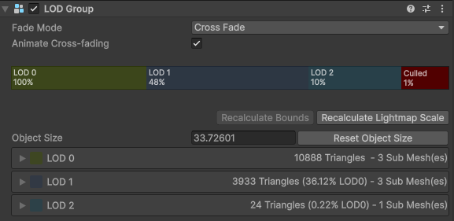

LOD Groups and Mesh LOD
BRG Instanced Renderer supports two LOD workflows — traditional LOD Groups and Mesh LOD (Unity 6.2+). Both use GPU-side LOD selection as part of the culling pass, so LOD switching has zero CPU cost.
LOD Groups
Full support for Unity's LOD Group component. LOD thresholds are read directly from your prefab's LOD Group and selected per-instance on the GPU based on screen size.

Mesh LOD
A single mesh with multiple internal LOD ranges — no LOD Group needed. Reduces memory overhead and simplifies prefab setup. Requires Unity 6.2+. Configured via BRG Prototype Extra Data / LOD Overrides.
Min Screen Size
Instances below a configurable screen-size threshold are culled entirely, with fade-out using any of the crossfade modes. This is set from either LOD Group, or BRG Prototype Extra Data.
LOD Bias
Respects Unity's global QualitySettings.lodBias automatically. Add a BRG Camera Settings component for per-camera LOD bias multipliers.
For LOD settings, see BRG Prototype Extra Data / LOD Overrides, BRG Camera Settings, and BRG Instanced Renderer Config.